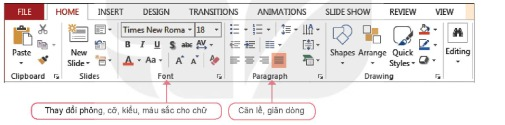
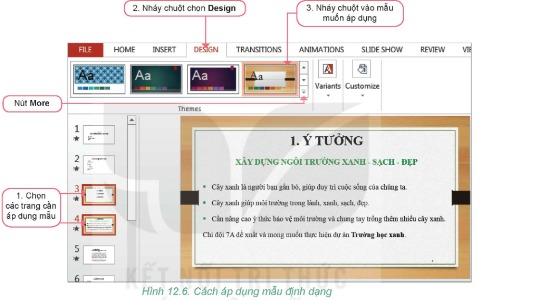
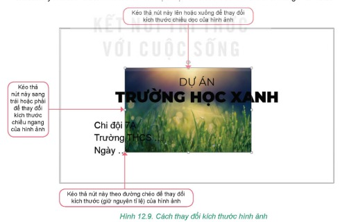
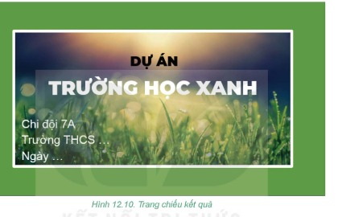

Dành cho giáo viên
Theo dõi lớp
| Học sinh / Nhóm | Đã nộp | Cập nhật |
|---|
Bước 1
1 Khởi động
Khởi động Trình bày báo cáo thật ấn tượng
Hôm nay, các bạn An, Minh và Khoa tiếp tục bàn về cách trình bày báo cáo dự án Trường học xanh.
An: Chúng ta có thể sao chép dữ liệu về ý tưởng dự án đã có sẵn từ tệp Truonghocxanh.docx, sao chép các kết quả tính toán từ các trang tính trong tệp THXanh.xlsx. Còn hình thức thì nên trình bày sao cho thật ấn tượng.
Minh: Minh hoạ bằng hình ảnh là một lựa chọn tốt. Hình ảnh có tính trực quan và rất thuyết phục.
Khoa: Bài trình bày sẽ hiệu quả hơn nếu sử dụng định dạng văn bản và ảnh minh hoạ một cách hợp lí.
An: Chúng ta có thể sao chép dữ liệu về ý tưởng dự án đã có sẵn từ tệp Truonghocxanh.docx, sao chép các kết quả tính toán từ các trang tính trong tệp THXanh.xlsx. Còn hình thức thì nên trình bày sao cho thật ấn tượng.
Minh: Minh hoạ bằng hình ảnh là một lựa chọn tốt. Hình ảnh có tính trực quan và rất thuyết phục.
Khoa: Bài trình bày sẽ hiệu quả hơn nếu sử dụng định dạng văn bản và ảnh minh hoạ một cách hợp lí.
Ghi bài Khởi động
Sau khi thầy cô chốt, em chép nội dung dưới đây vào vở.
Bước 2 · Hình thành kiến thức mới
2.1 Ảnh minh hoạ
Hoạt động 1 Ảnh minh hoạ
1. Theo em có nên sử dụng hình ảnh để minh hoạ cho bài trình chiếu không? Vì sao? 2. Em sẽ chọn hình ảnh gì để thêm vào bài trình chiếu báo cáo dự án?
Đọc mục 1 (SGK trang 61). Hình ảnh là dạng thông tin trực quan và dễ gây ấn tượng nhất. Sử dụng hình ảnh minh hoạ cho nội dung trình bày sẽ giúp cho bài trình chiếu hấp dẫn và sinh động, thu hút sự chú ý của người nghe. Khi lựa chọn hình ảnh nên căn cứ vào hai yếu tố quan trọng sau: phù hợp với nội dung; có tính thẩm mĩ. Sẽ ấn tượng hơn nếu các hình ảnh trong trang chiếu có kích thước và vị trí hợp lí, kết hợp với nội dung thành một tổng thể hài hoà.
Đọc mục 1 (SGK trang 61). Hình ảnh là dạng thông tin trực quan và dễ gây ấn tượng nhất. Sử dụng hình ảnh minh hoạ cho nội dung trình bày sẽ giúp cho bài trình chiếu hấp dẫn và sinh động, thu hút sự chú ý của người nghe. Khi lựa chọn hình ảnh nên căn cứ vào hai yếu tố quan trọng sau: phù hợp với nội dung; có tính thẩm mĩ. Sẽ ấn tượng hơn nếu các hình ảnh trong trang chiếu có kích thước và vị trí hợp lí, kết hợp với nội dung thành một tổng thể hài hoà.
Câu hỏi SGK trang 62
Ghi bài 1. Ảnh minh hoạ
Sau khi thầy cô chốt, em chép nội dung dưới đây vào vở.
Bước 2 · Hình thành kiến thức mới
2.2 Định dạng văn bản
Hoạt động 2 Định dạng văn bản
1. Sau khi tạo văn bản cho một bài trình chiếu, em thường định dạng văn bản như thế nào? Cần làm gì để nhấn mạnh nội dung trên một trang? 2. Có nên viết nhiều chữ, dùng nhiều màu trên một trang không? Vì sao?
Đọc mục 2 (SGK trang 62). Các phần mềm trình chiếu đều có các công cụ định dạng văn bản giúp cho người sử dụng định dạng phông chữ, cỡ chữ, kiểu chữ, màu chữ, căn lề,… Cách sử dụng các công cụ định dạng văn bản của phần mềm trình chiếu tương tự như của phần mềm soạn thảo văn bản mà em đã học ở lớp 6. Để tạo được bài trình bày hiệu quả và chuyên nghiệp em cần chú ý:
Đọc mục 2 (SGK trang 62). Các phần mềm trình chiếu đều có các công cụ định dạng văn bản giúp cho người sử dụng định dạng phông chữ, cỡ chữ, kiểu chữ, màu chữ, căn lề,… Cách sử dụng các công cụ định dạng văn bản của phần mềm trình chiếu tương tự như của phần mềm soạn thảo văn bản mà em đã học ở lớp 6. Để tạo được bài trình bày hiệu quả và chuyên nghiệp em cần chú ý:
- Phông chữ: nên chọn phông đơn giản, dễ đọc (ví dụ: Arial, Calibri, Tahoma,…); không nên sử dụng quá nhiều phông chữ trên một trang.
- Cỡ chữ: tiêu đề nên dùng cỡ từ 40 đến 50, văn bản nên dùng cỡ từ 18 trở lên, tuỳ phông chữ.
- Kiểu chữ: tiêu đề nên chọn kiểu chữ đậm, nội dung chọn kiểu chữ thường.
- Màu chữ: màu chữ cần tương phản với màu nền của trang, không sử dụng quá nhiều màu chữ.
- Số lượng chữ trên trang: không dùng quá nhiều chữ trên một trang. Mỗi trang chỉ nên có khoảng 5 đến 7 dòng.
- Nội dung trong mỗi trang chiếu chỉ nên tập trung vào một ý chính. Văn bản cần cô đọng, chọn lọc từ ngữ. Thông điệp chính hay những điều quan trọng nên được làm nổi bật và nhấn mạnh bằng cách dùng kiểu chữ đậm, màu,…
Câu hỏi SGK trang 63
Ghi bài 2. Định dạng văn bản
Sau khi thầy cô chốt, em chép nội dung dưới đây vào vở.
Bước 2 · Thực hành
2.3 Thực hành: Sao chép dữ liệu, chèn hình ảnh, định dạng cho văn bản và hình ảnh trong trang chiếu
Nhiệm vụ Hoàn thiện bài trình chiếu Trường học xanh
Nhiệm vụ: tiếp tục hoàn thiện bài trình chiếu báo cáo dự án Trường học xanh: sao chép dữ liệu từ tệp văn bản Truonghocxanh.docx sang tệp trình chiếu Truonghocxanh.pptx; định dạng cho văn bản trên trang chiếu; chèn hình ảnh minh hoạ vào trang chiếu; định dạng cho hình ảnh trên trang chiếu.
Hướng dẫn:
Hướng dẫn:
- a) Sao chép dữ liệu từ tệp văn bản sang tệp trình chiếu. Bước 1. Mở tệp văn bản Truonghocxanh.docx. Bước 2. Chọn phần dữ liệu cần sao chép rồi thực hiện lệnh Copy (Home/Copy hoặc Ctrl+C). Bước 3. Mở tệp trình chiếu Truonghocxanh.pptx. Bước 4. Đặt con trỏ tại vị trí cần sao chép đến rồi thực hiện lệnh Paste (Home/Paste hoặc Ctrl+V).
- b) Sử dụng các công cụ định dạng văn bản trong thẻ Home (nhóm Font: phông, cỡ, kiểu, màu chữ; nhóm Paragraph: căn lề, giãn dòng), thêm kí hiệu đầu dòng,… đồng thời biên tập lại nội dung văn bản trong trang chiếu, chọn lọc từ ngữ, làm nổi bật ý chính để nội dung ngắn gọn, cô đọng (Hình 12.5).
- c) Áp dụng các mẫu định dạng: chọn các trang cần áp dụng mẫu (nhấn giữ Ctrl để chọn đồng thời nhiều trang; nếu không chọn trang thì mẫu sẽ được áp dụng cho tất cả các trang), chọn thẻ Design, nháy chuột vào mẫu muốn áp dụng (Hình 12.6). Nháy Undo (Ctrl+Z) để khôi phục lại mẫu trước đó.
- d) Chèn hình ảnh vào trang chiếu: chọn trang chiếu cần chèn hình ảnh; chọn Insert/Pictures; chọn tệp ảnh, nháy chuột chọn nút Insert. Nên chọn lọc hình ảnh đưa vào bài và lưu ý đến bản quyền của hình ảnh.
- e) Sử dụng các công cụ định dạng cho hình ảnh: thay đổi lớp (Format/Arrange/Send Backward hoặc Bring Forward); thay đổi vị trí (kéo thả hình); thay đổi kích thước (Hình 12.9); thêm đường viền (Format/Picture Styles/Picture Border); có thể đặt nền màu xanh cho trang chiếu, đổi màu cho văn bản để được kết quả tương tự như Hình 12.10.




Làm trên phần mềm trình chiếu mô phỏng: bài Truonghocxanh đã có trang tiêu đề, trang Nội dung trình bày và một trang trống (trang 3). Bôi đen phần “1. Ý TƯỞNG” trong tệp văn bản, bấm Copy, nháy vào trang 3 rồi bấm Paste (hoặc Ctrl+V); biên tập, định dạng như Hình 12.5; chọn mẫu ở Design · Themes; ở trang 1 chèn hình, đưa hình xuống dưới chữ, đổi vị trí, kích thước, thêm viền và đổi màu nền như Hình 12.10.
Ghi bài 3. Thực hành
Sau khi thầy cô chốt, em chép nội dung dưới đây vào vở.
Bước 3
3 Luyện tập
Luyện tập Câu hỏi SGK trang 67
Có thể làm tiếp trên phần mềm trình chiếu mô phỏng ở phần Thực hành (New Slide để thêm trang Dự kiến kết quả).
Ghi bài Luyện tập
Sau khi thầy cô chốt, em chép nội dung dưới đây vào vở.
Bước 4
4 Vận dụng
Vận dụng Hoàn thiện Baitaptinhoc7.pptx
Có thể soạn thử trên phần mềm trình chiếu mô phỏng dưới đây trước khi làm trên máy tính.
Ghi bài Vận dụng
Sau khi thầy cô chốt, em chép nội dung dưới đây vào vở.